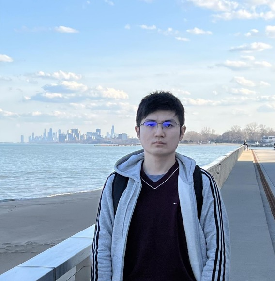

Hang Yuan
I am a tenure-track Assistant Professor at BIMSA.
Previously, I was a Boas Assistant Professor of Mathematics at Northwestern University, where I was mentored by Professor Eric Zaslow. I earned my Ph.D. from Stony Brook University under the supervision of Professor Kenji Fukaya.
Research interests
My primary research aims to develop a precise mathematical formulation of the SYZ conjecture by utilizing methods from non-Archimedean analytic geometry, homotopy theory of $A_\infty$ structures, and family Floer theory for quantum correction.
I am also interested in topics in noncommutative geometry and algebraic topology, such as operads, Hochschild (co)homology, and loop spaces.
Papers
-
An exact Kähler form on $(\mathbb{C}^*)^2$ without a global SYZ fibration arXiv
-
Koszul duality and homotopy algebras for operads over quivers arXiv
-
Family Floer SYZ mirror algorithm for the Grassmannian $Gr(2,4)$ (with Zekai Yu) arXiv
-
Higher operad structure for Fukaya categories arXiv
-
Cyclic brace relation and BV structure on open-closed Hochschild cohomology arXiv
-
An open-closed string analogue of Hochschild cohomology arXiv
-
Family Floer SYZ conjecture for $A_n$ singularity Beijing J. Pure Appl. Math., 2026, 3(2): 417–489 arXiv slide
-
Family Floer superpotential’s critical values are eigenvalues of quantum product by $c_1$ Selecta Mathematica, 2025, 31(1): 13 arXiv slide
-
Disk counting and wall-crossing phenomenon via family Floer theory J. Fixed Point Theory Appl., 2022, 24(4): 77 arXiv slide · video